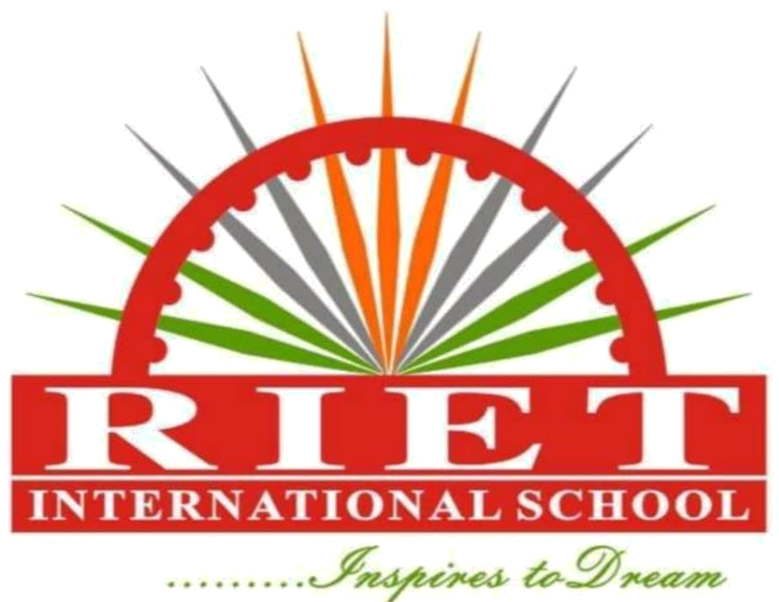

The rising sun
The RIET emblem is a sun behind a half wheel. The site grows out of it.

Colour, sampled from the logo and the uniforms
RIET red #D9241B
the plinth, the ring, every action
Ray orange #FF6A00
Marigold #FFB81C
warmth, celebration
Leaf #4E8F00
Morning sky #DCF0FB
calm, space
Temple ink #26100F
Type
Anek, drawn in India with matching Latin and Odia. One family, so both scripts sit together naturally.
Odisha
Pasapalli checks, taken from the costumes our students wear on stage.
Pinterest references (local only, not committed)
Kept: one huge shape, real faces, sentence-like interaction, tab-like exploration. Rejected: card grids, icon rows, stock children, maroon-and-gold templates.